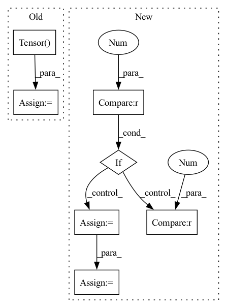

Pattern ID :15215

Before Change
b_percentile = np.percentile(b_copy, percentile)
new_w_mask = torch.Tensor((w_copy >= w_percentile).astype(int))
new_b_mask = torch.Tensor((b_copy >= b_percentile).astype(int))
self.w_mask = new_w_mask
self.b_mask = new_b_mask
self.w = torch.nn.Parameter(
After Change
new_b_mask = np.zeros_like(b_copy)
for task_num in range(self.num_tasks):
if task_num != 0:
for prev_idx in range(task_num - 1):
w_copy[task_num][new_w_mask[prev_idx] == 1] = 0
b_copy[task_num][new_b_mask[prev_idx] == 1] = 0
w_percentile = np.percentile(w_copy[task_num], percentile)
b_percentile = np.percentile(b_copy[task_num], percentile)
new_w_mask[task_num] = (w_copy[task_num] >= w_percentile).astype(int)
new_b_mask[task_num] = (b_copy[task_num] >= b_percentile).astype(int)
self.w_mask = torch.Tensor(new_w_mask)
In pattern: SUPERPATTERN
Frequency: 3
Non-data size: 7
Instances
Fragment ID: 51416192
Project Name: beyond-ml-labs/beyondml
Commit Name: 03dd7b87e47d75ba5a7317f31e1ff50b340898a7
Time: 2022-06-02
Author: 77127228+jacobrenn@users.noreply.github.com
File Name: mann/burning/layers/MultiMaskedDense.py
M Class Name: MultiMaskedDense
N Class Name: MultiMaskedDense
M Method Name: prune(2)
N Method Name: prune(2)
M Parent Class: torch.nn.Module
N Parent Class: torch.nn.Module
M File Name: mann/burning/layers/MultiMaskedDense.py
N File Name: mann/burning/layers/MultiMaskedDense.py
M Start Line: 43
M End Line: 52
N Start Line: 40
N End Line: 58
'>
Before Change
b_percentile = np.percentile(b_copy, percentile)
new_w_mask = torch.Tensor((w_copy >= w_percentile).astype(int))
new_b_mask = torch.Tensor((b_copy >= b_percentile).astype(int))
self.w_mask = new_w_mask
self.b_mask = new_b_mask
self.w = torch.nn.Parameter(
After Change
new_b_mask = np.zeros_like(b_copy)
for task_num in range(self.num_tasks):
if task_num != 0:
for prev_idx in range(task_num - 1):
w_copy[task_num][new_w_mask[prev_idx] == 1] = 0
b_copy[task_num][new_b_mask[prev_idx] == 1] = 0
w_percentile = np.percentile(w_copy[task_num], percentile)
b_percentile = np.percentile(b_copy[task_num], percentile)
new_w_mask[task_num] = (w_copy[task_num] >= w_percentile).astype(int)
new_b_mask[task_num] = (b_copy[task_num] >= b_percentile).astype(int)
self.w_mask = torch.Tensor(new_w_mask)
'>
Fragment ID: 51416177
Project Name: beyond-ml-labs/beyondml
Commit Name: 03dd7b87e47d75ba5a7317f31e1ff50b340898a7
Time: 2022-06-02
Author: 77127228+jacobrenn@users.noreply.github.com
File Name: mann/burning/layers/MultiMaskedConv2D.py
M Class Name: MultiMaskedConv2D
N Class Name: MultiMaskedConv2D
M Method Name: prune(2)
N Method Name: prune(2)
M Parent Class: torch.nn.Module
N Parent Class: torch.nn.Module
M File Name: mann/burning/layers/MultiMaskedConv2D.py
N File Name: mann/burning/layers/MultiMaskedConv2D.py
M Start Line: 98
M End Line: 107
N Start Line: 85
N End Line: 103
'>
Before Change
estimated_sources = norbert.wiener(estimated_amplitude, mixture, eps=eps)
estimated_sources = estimated_sources.transpose(3, 2, 1, 0)
estimated_sources = torch.Tensor(estimated_sources).to(device, dtype)
return estimated_sources
After Change
n_dims = mixture.dim()
if n_dims == 4:
mixture = mixture.squeeze(dim=0)
elif n_dims != 3:
raise ValueError("mixture.dim() is expected 3 or 4, but given {}.".format(mixture.dim()))
assert estimated_amplitude.dim() == 4, "estimated_amplitude.dim() is expected 4, but given {}.".format(estimated_amplitude.dim())
device = mixture.device
dtype = mixture.dtype
mixture = mixture.detach().cpu().numpy()
estimated_amplitude = estimated_amplitude.detach().cpu().numpy()
mixture = mixture.transpose(2, 1, 0)
estimated_amplitude = estimated_amplitude.transpose(3, 2, 1, 0)
estimated_sources = norbert.wiener(estimated_amplitude, mixture, eps=eps)
estimated_sources = estimated_sources.transpose(3, 2, 1, 0)
estimated_sources = torch.from_numpy(estimated_sources).to(device, dtype)
return estimated_sources
'>
Fragment ID: 51416165
Project Name: tky823/dnn-based_source_separation
Commit Name: 25840d65326c0f609aa08d466f1a5a8d68a7ba1d
Time: 2021-08-14
Author: 40362510+tky823@users.noreply.github.com
File Name: egs/musdb18/d3net/src/adhoc_driver.py
M Class Name: AnonimousClass
N Class Name: AnonimousClass
M Method Name: apply_multichannel_wiener_filter(4)
N Method Name: apply_multichannel_wiener_filter(4)
M Parent Class:
N Parent Class:
M File Name: egs/musdb18/d3net/src/adhoc_driver.py
N File Name: egs/musdb18/d3net/src/adhoc_driver.py
M Start Line: 358
M End Line: 372
N Start Line: 358
N End Line: 377